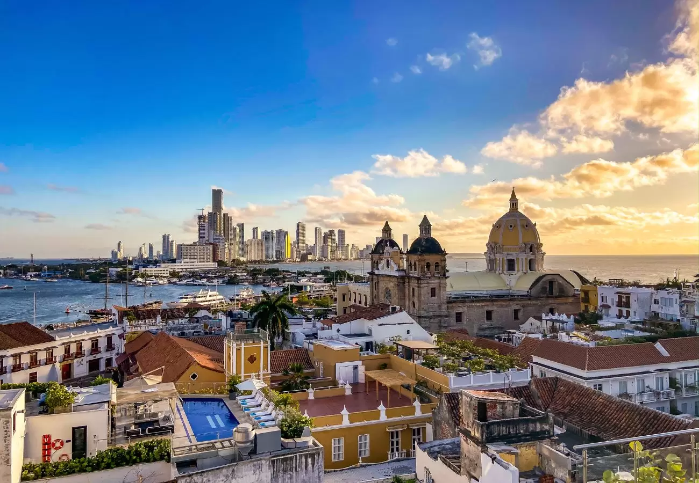

Lisboa, Portugal
Cidade histórica com bondes amarelos, miradouros e pastéis de nata em cada esquina.
Cidade histórica com bondes amarelos, miradouros e pastéis de nata em cada esquina.
Templos milenares, jardins de bambu e a tradição do chá em meio à cidade moderna.

Centro histórico colorido às margens do Caribe, cheio de música e boa comida.
| Destino | Nota |
|---|---|
| Lisboa, Portugal | 9 |
| Kyoto, Japão | 10 |
| Cartagena, Colômbia | 8 |